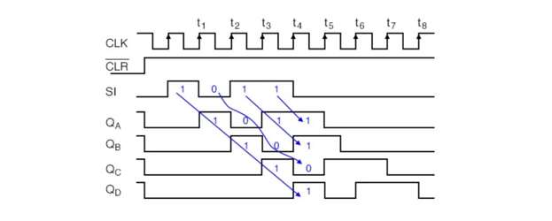
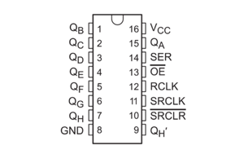
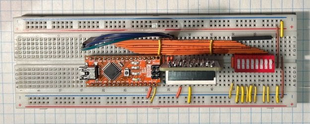
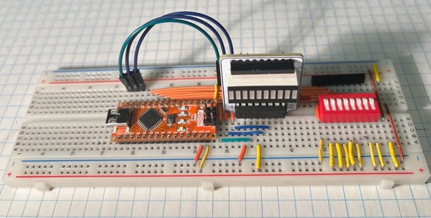

2023 · Arduino + Shift Registers
Binary Game
Built an Arduino-based binary input system that reads an 8-position DIP switch and displays the equivalent binary value on a Morland LED bar graph using a shift register output.

Video Demonstration
Working demonstration
The project video shows the physical build, behaviour, and final result.
 ▶ Watch on YouTube
▶ Watch on YouTube
Project Overview
Use software to compress eight inputs into a controlled serial output.
The project connected physical binary inputs to software logic, then used serial shifting to control an 8-bit display with only a few output pins.
What I built
- 8-bit DIP rocker input bank
- Arduino Nano input-reading firmware
- Shift-register driven LED bar graph
- Serial monitor binary display
Technical Skills
Skills demonstrated
Embedded C++
Applied directly in the design, build, debugging, or final integration of the project.
Bit shifting
Applied directly in the design, build, debugging, or final integration of the project.
Shift registers
Applied directly in the design, build, debugging, or final integration of the project.
Digital input handling
Applied directly in the design, build, debugging, or final integration of the project.
Serial debugging
Applied directly in the design, build, debugging, or final integration of the project.
Build Story
Shift-register timing and final breadboard build
Organized wiring
The image to the right shows the 74HC595 shift-register pinout used by the Morland bar graph to convert serial data into multiple LED outputs.

Shift register timing
The image to the right shows the top view of the Binary Game breadboard, with the DIP rocker inputs routed to the Arduino Nano and bar graph output.

Output hardware
The image to the right shows the final Binary Game breadboard prototype, including the DIP rocker switch bank, Arduino Nano, and organized LED bar graph wiring.
